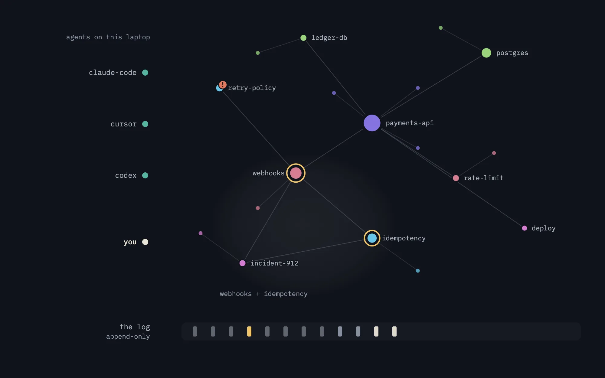
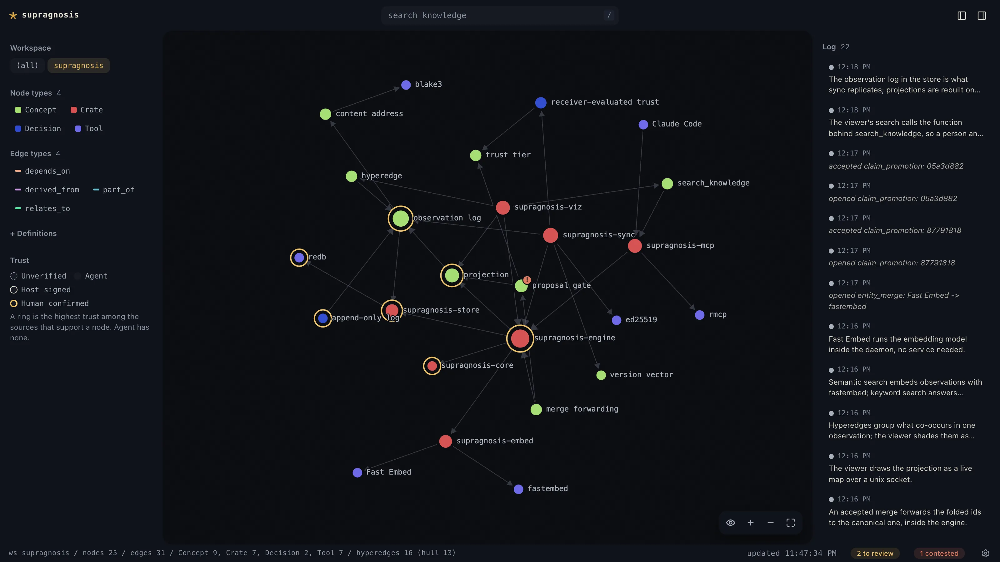

Most agent memory cannot answer three questions about what it holds. Here is how supragnosis answers each one.
Who said this? step 1
Has anyone checked it? step 3
Does my other machine know? step 5
1 / 5 write
Agents write as they work.
While they code, debug and decide, your agents call observe with a note and whatever structure they have. Each entry keeps which machine wrote it, for whom, from what source and how sure. Entries are never edited, only superseded.
A deterministic projector turns entries into entities and relations, and what is said together gathers into a region. Delete the graph, replay the log, and the same graph comes back on any machine.
log6 entriesgraph18 entities, 18 relationsregionwebhooks + idempotencyreplaysame log, same graph
3 / 5 govern
Disagreements wait for you.
When agents disagree, the conflict is flagged, never quietly settled. Changes to what counts as true, like merging two names for one thing or confirming a claim, arrive as proposals you accept or reject on the Review page. Your verdict goes into the log like any entry.
Needs you 3
Merge pg into postgresAcceptConfirm a claim: webhooks need an idempotency keyAcceptContested: the type of retry-policywaiting
Answers: has anyone checked it?
4 / 5 recall
Any agent can ask, and gets receipts.
Weeks later a different agent searches. Hits come back ranked, and each points to the entries behind it: which machine wrote them, for whom, when, and how far they are trusted.
search_knowledge "webhook idempotency" hybrid
hitidempotencysaid bylaptop, for youentries3 and 4trusthuman confirmed
5 / 5 travel
Your other machines get the same memory.
The log syncs through a hub to the machines you choose, one workspace at a time, and is never flattened into merged state. Each machine checks every signature and replays the same graph, your verdicts included. An entry that only claims a person checked it counts for no more than its signature proves.
laptophuman confirmed, your verdictdesktophuman confirmed, the same verdicta bare claimhost signed at mostsharedonly the workspaces you allow
Answers: does my other machine know?

a made-up project, three agents and you
See it in the viewer.
The marks above are the viewer's own. The desktop app draws your graph as agents write it: a gold ring is something a person confirmed, a coral badge a value agents disagree on, and Review counts what waits for you.

A made-up workspace in the desktop app. The viewer is served on an owner-only socket, never a network port.
Works with the tools you already use.
Claude Code, Claude Desktop, Cursor, VS Code, Codex, Gemini CLI and OpenCode connect with one command and no token to copy, or with Connect in the app's Settings.
Only what you share. Sync is off until you add a server, and then it carries only the workspaces you allow.
Do I need an API key or a model?
No. Search uses a local embedding model fetched once (224 MB); until then, keyword search works and says so.
What if I stop using it?
Your knowledge is a directory, and its log replays into the same graph on any node.
How is this different from a notes file?
A notes file keeps what someone wrote. This keeps which machine and person said each thing and whether a person checked it, and shares it with every agent and machine you use.
Up and running in a minute.
Install
# the desktop app, signed and notarized, with the server
brew install --cask ashon/tap/supragnosis
# or the server alone, running at every login
brew install ashon/tap/supragnosis-server
supragnosis service install
# x86_64 or arm64, glibc 2.39+, checksum-verified
curl -fsSL https://supragnosis.dev/install.sh | sh
# keep it running: the systemd user unit# in deploy/systemd of the repository
git clone https://github.com/Ashon/supragnosis
cd supragnosis
# fastembed = the local embedding model, as the release is built
cargo build -p supragnosis-cli --features fastembed
Connect
supragnosis connect claude-code, or Connect in the app's Settings.
Keep working
Open the app. The graph fills in as your agents write, and Review lists what waits for you.
The daemon serves MCP on 127.0.0.1:7373 and the viewer on a unix socket. The embedding model (224 MB) is fetched once by service install or supragnosis embed fetch; until then search is keyword only, and supragnosis status says so.